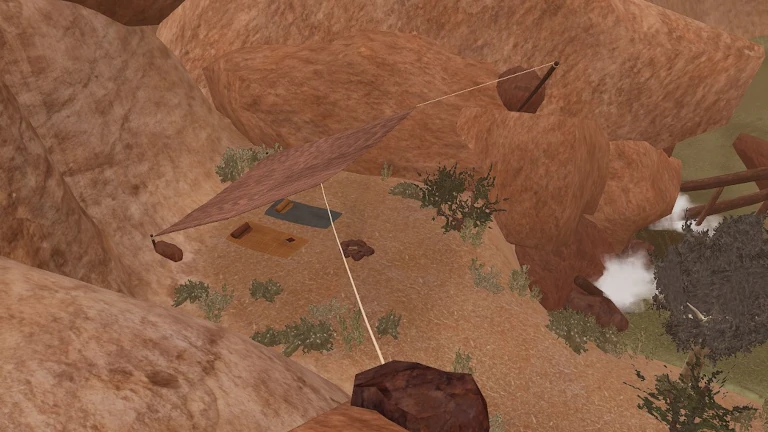

The Official Goldenheart Strategy Guide
Chapter 1 - Mt. Tulderon Trail
1.1 Exploring Camp
The game opens with a short scene showing the silhouette of a cloaked figure doing magic over a cauldron, and the game title. Next we see the expedition team of which the player is a member. They are sitting around a campfire discussing whether to call off the expedition. They hear a noise and then Darah is seen checking on Neth, who has just killed a giant Glugbug with a hatchet.
After the cutscene, gameplay begins in a new campsite in the morning. Right off the bat, get the first health upgrade by jumping on top of your tent and walking up the rope to a secret upper area of the level. Head along the path to find the upgrade near a skeleton, then return back to your tent or hop down into the middle of camp.


The book directly in front of you when you began reiterates some context about the expedition encountering trouble. Walk upstream to the next tent to find another journal describing the dreams of its author. Walk into the main area of the camp to meet the other members of the expedition. When you’re satisfied, head to the medium sized tent with two tables and talk to Ferold. Pick up the Bow and the Machete and Wok combo. Continue upstream to Darah, who asks you to go look for Marren but will only allow you to pass once you have gotten your weapons from Ferold. Beyond Darah and the Jumping Spider is the level exit.
1.2 Finding Marren
After loading into the second level, head up the rocky path instead of walking in the river. Near the first Porcutortoise look for a log across the river and cross it to find the second Health Upgrade behind a rock. Continue working your way upstream to a pool area above a waterfall, killing or evading monsters and climbing some rocks on the way. To kill Sentaroks you must shoot them in the mouth with an arrow.
In the pool area you must find and press two pressure plates in order to open a stone passage to the next area. The first button is reached by jumping across the rock pillars with the Porcutortoises on them. Pressing it will raise one of the pillars, allowing you to access the upper course to the second button. From the second button, drop immediately down to the first button and repeat only the first half of the upper course to get back to the passage.
Through the passage is a dry area with red stone. There is a pressure plate that needs to be held down with a stone block and there is a yard full of cone shaped Giant Hats that will teleport the player around the yard when entered. There is a Giant Scorpion in this area. The Scorpion’s attack can be easily evaded by targeting it as it approaches and then dodging to the side when it charges. Defeat the Scorpion and then find the Giant Hat with orange flowers near the entrance to teleport to a separate area where the sandstone block is hiding. When placed on the pressure plate, the stone door will open and the first Sandstone Dog will be turned back into a real dog.
Pet the dog, pass through the first cave, listen to the Courier Quail’s invitation, and then continue through the second cave to find Marren puzzling over the first password puzzle. Marren will give you chalk and ask you to look around for clues. Exit the cave through the large opening and visit the first Healing Well to recover your health. Walk across the logs to access a new path, don’t jump back down to the small yard with the Courier Quail. Continue past some monsters and down the narrow switchbacks to another yard with another Giant Scorpion. After defeating the Scorpion, stand on the pressure plate to move a large boulder. Look under where the boulder moved from to discover the password to the door that Marren is studying. Ignore the climbing wall that leads back to the Giant Hats and instead return the way you came to get back to Marren.
1.3 Defeating the Molekin Nest
When you continue past Marren the door will close itself behind you, so make sure to stock up on arrows and health before you go. Head up to the obvious boss arena and walk towards the middle of it to trigger the fight with Molekin. At first, only a single Molekin will emerge from the ground. Save your arrows and practice targeting the singular molekin, dodging to the side when it begins to run directly towards you.
Several more will appear to fight you at once. Target one at a time and try to blow through your arrows while dodging away whenever one rushes for your face. You can help ensure evasion by trying to target whichever one is currently coming for you. All in all, you should be able to win this battle fairly easily even if you are a bit emotionally scarred, just by slashing away at each Molekin until they are all dead.
Once the Molekin Nest is defeated, the red crystals blocking your path forward will shatter. Continuing into the next yard, ignore the climbing wall to your immediate right and pass through the Glugbug area and up into a small cave and get the achievement “Tuldenorrea 101” by reading the book inside. Then continue up and jump across the gap to get back on course.
1.4 Up Into the Pines
You’ll soon find yourself in a spider infested pine forest. Use your bow to pick off spiders when you see them from a distance, but listen for their footsteps and take out your Machete when they are approaching you. If you are standing where you can see the stream, look upstream for a log that bridges the gap. That is the way forward. For a health upgrade and an achievement for Haiku #1, wade downstream instead. When you get to the waterfall, walk out to your left on top of the cliff and then jump down from ledge to ledge to the bottom. Enter the cave behind the waterfall to find a cave painting, Haiku #1, and a health upgrade. The Giant Hat inside the cave will teleport you back into the spider infested woods, so take out your machete before you enter it!
Continue past the stream by crossing the log, then head up the path into the cave where you will fight a Cavanarg. Cavanarg is big and slow and can be dodged, so it's better to save your arrows for the next section. After defeating the Cavanarg, enter the Giant Hat in the cave to teleport to the top of the cave. The area has a Via Ferrata that leads to the level exit but the exit is password protected. Pick off the Chompis from the via ferrata with your bow, then hop down the ledges near the password door to the small stone altar to record the password. You will not return to this area once you leave.

1.5 Orloma’s House
Orloma lives at the summit of Mt. Tulderon Trail in a small stone cottage. Speak to her and she will ask you to investigate the Great Bottomless Pit at Kahlora Wash. After speaking to her the level exit will open. Go straight out of her front door and continue down the path to the exit.
The other side of Mt. Tulderon is composed of granite cliffs and a pine forest. The trail is the only safe terrain in the area and leads directly to Histahnia Valley. We’ll come back to this area later to find some secrets but since they aren’t all available yet it’s better to head down the trail for now.
1.6 Histahnia Valley Part 1: Rescuing Fitch
When you get to the bottom of the mountain on the trail you will pass through a short and narrow tunnel created by two large boulders. Before going through, look to your right for bright grey climbing holds that stand out against a darker grey cliff. Continuing to the village, some of the villagers will mention a mountain guide named Fitch, and the guestbook will have an entry from him that leads you back to the climbing wall in case he doesn’t return from his outing. Climb the first section and then look up and to the left to see the next section. After some climbing and jumping you will find Fitch on a high cliff, stuck under a large rock. Talk to him to move the rock and he will give you half of his rope as a reward. Now that you have the rope, use the nearby rappel anchor to get back down into the valley. When facing the village from the mountain, Kahlora Wash is down the path that exits the village on your right. Head down the path and rappel into the level entrance.